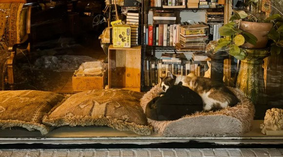

Our Story
ᗢᘏ꠹ ⊹₊˚‧︵‿₊⊱⋆⊱༻𖥸༺⊰⋆⊰₊‿︵‧˚₊⊹ ᓚᘏᗢ
Imagine relaxing with your favorite drink or snack from our cafe run by our lovely cafe staff while watching the playful antics or listening to the soothing purrs of adorable, and adoptable cats and kittens! This is exactly the atmosphere you will encounter at The Catio with our cozy coffeehouse, comfortable furniture, premium beverages and pastries and 1,000-square-foot play/lounge area where our cats roam free. We partner with local shelters to provide a place for several cats and kittens to have a comfortable place to lounge in while giving them an opportunity for possible adoption! For a small entry fee, guests can bring their beverages and food and pet and cuddle all of our feline residents, maybe even bring one home! But if you want to grab your coffee and go, that’s fine as well.
⊹₊˚‧︵‿₊⊱· ฅᨐฅ ·⊰₊‿︵‧˚₊⊹
